1. 函数与极限¶
高等数学的研究对象是 变量
函数关系就是变量之间的 依赖关系
极限方法是研究变量的一种基本方法
1.1. 映射与函数¶
1.1.1. 集合¶
概念¶
集合 指具有某种特定性质的事物的总体(用大写字母 \(ABC\) 表示)
组成集合的事物称为集合的 元素 (用小写字母 \(abc\) 表示)
\(a\) 是 \(A\) 的元素, 则 \(a\) 属于 \(A\), 记作 \(a \in A\); \(a\) 不属于 \(A\), 记作 \(a \notin A\)
含有有限元素的集合称为 有限集; 否则称为 无限集
不含任何元素的集合称为 空集, 记作 \(\emptyset\)
表示集合的方法¶
列举法 \(A = \{a_{1}, a_{2}, ..., a_{n}\}\)
描述法 \(M=\{x|x具有性质P\}\)
对于数集, 在右上角标上 “*” 来表示排除 0, 标上 “+” 来表示排除 0 与负数 - \(N\) - 全体非负整数即自然数 - \(N^{+}\) - 全体正整数 - \(Z\) - 全体整数 - \(Q\) - 全体有理数 - \(R\) - 全体实数
集合间的关系¶
设 \(A\), \(B\) 是两个集合
\(A\) 的元素都是 \(B\) 的元素, 则称 \(A\) 是 \(B\) 的 子集, 记作 \(A \subset B\) 或 \(B \supset A\) (否则 \(A \not\subset B\))
\(A\) 与 \(B\) 互为子集, 即 \(A \subset B\) 且 \(B \subset A\), 则称 \(A\) 与 \(B\) 相等, 记作 \(A = B\)
\(A \subset B\) 且 \(A \neq B\), 则称 \(A\) 是 \(B\) 的 真子集, 记作 \(A \subsetneqq B\)
空集是任何集合的子集 \(\emptyset \subset A\)
集合间的运算¶
- 并
所有属于A或属于B的元素组成的集合, \(A \cup B\) (or)
- 交
所有既属于A又属于B的元素组成的集合, \(A \cap B\) (and)
- 差
所有属于A不属于B的元素组成的集合, \(A \setminus B\) 或 \(A - B\)
- 补
全集中不属于 \(A\) 的元素, 记作 \(\overline{A}\) 或 \(A^{C}\) 或 \(A'\)
- 直积/笛卡尔乘积
所有可能的有序对组成的集合, \(A \times B = \{(x,y)|x \in A, y \in B\}\)
运算法¶
- 交换律
\(A \cup B = B \cup A, A \cap B = B \cap A\)
- 结合律
\((A \cup B) \cup C = A \cup (B \cup C) = A \cup B \cup C\) \((A \cap B) \cap C = A \cap (B \cap C) = A \cap B \cap C\)
- 分配律
\((A \cap B) \cup C = (A \cup C) \cap (B \cup C)\) \((A \cup B) \cap C = (A \cap C) \cup (B \cap C)\)
- 对偶律(德摩根律)
\(\overline{(A \cap B)} = \overline{A} \cup \overline{B}, \overline{(A \cup B)} = \overline{A} \cap \overline{B} (绝对形式)\) \(A - (B \cap C) = (A - B) \cup (A - C), A - (B \cup C) = (A - B) \cap (A - C) (相对形式)\)
- 吸收律
\((A \cap B) \cup A = A, (A \cup B) \cap A = A\)
- 零律
\(A \cup E = E, A \cap E = A\)
- 同一律
\(A \cup \emptyset = A, A \cap E = A, A \cup E = E, A \cap \emptyset = \emptyset\)
- 矛盾律
\(A \cap \overline{A} = \emptyset\)
- 排中律
\(A \cup \overline{A} = E\)
- 余补律
\(\overline{\emptyset} = E, \overline{E} = \emptyset\)
- 双重否定律
\(\overline{(\overline{A})} = A\)
- 补交转换律
\(A - B = A \cap \overline{B}\)
1.1.2. 区间¶
设 \(a\) 和 \(b\) 都是实数, 且 \(a < b\)
开区间 \((a, b) = |x|a < x < b|\)
闭区间 \([a, b] = |x|a \leqslant x \leqslant b|\)
半开区间 \([a, b)\), \((a, b]\)
以上区间称为 有限区间, \(b-a\) 称为区间长度
无限区间 (如实数集 \(R\) 也可记为 \((-\infty, +\infty)\))
两个闭区间的直积表示 \(xOy\) 平面上的矩形区域 (如 \([a,b] \times [c,d] = |(x,y)|x \in [a,b], y \in [c,d]|\) 即为 \(xOy\) 平面上的一个矩形区域, 这个区域在 \(x\) 轴和 \(y\) 轴上的投影分别为闭区间 \([a,b]\) 和闭区间 \([c,d]\))
邻域¶
以点 \(a\) 为中心的任何开区间称为点 \(a\) 的邻域, 记作 \(U(a)\)
设 \(\delta\) 为任一正数, 则开区间 \((a-\delta, a+\delta)\) 就是点 \(a\) 的一个邻域; 这个邻域称为点 \(a\) 的 \(\delta\) 邻域, 记作 \(U(a, \delta)\), 即与点 \(a\) 的距离小于 \(\delta\) 的一切点 \(x\) 的集合
\[U(a, \delta) = |x|a-\delta < x < a+\delta| = |x||x-a| < \delta|\]点 \(a\) 称为邻域中心, \(\delta\) 称为邻域半径
去掉中心点 \(a\) 的 \(\delta\) 邻域叫做点 \(a\) 的去心 \(\delta\) 邻域, 记作 \(\mathring{U}(a,\delta)=|x|0<|x-a|<\delta|\)
左 \(\delta\) 邻域 \((a-\delta,a)\), 右 \(\delta\) 邻域 \((a,a+\delta)\)
1.1.3. 映射¶
设 \(X\), \(Y\) 是两个非空集合, 如果存在一个法则 \(f\), 使得对 \(X\) 中每个元素 \(x\), 按法则 \(f\), 在 \(Y\) 中有唯一确定的元素 \(y\) 与之对应, 则称 \(f\) 为从 \(X\) 到 \(Y\) 的 映射, 记作
\(y\) 称为元素 \(x\) (在映射:math:f 下)的 像, 并记作 \(f(x)\), 即
元素 \(x\) 称为元素 \(y\) (在映射:math:f 下)的一个 原像
集合 \(X\) 称为映射 \(f\) 的 定义域, 记作 \(D_{f}\), 即 \(D_{f}=X\)
\(X\) 中所有元素的像所组成的集合称为映射 \(f\) 的 值域, 记作 \(R_{f}\) 或 \(f(X)\), 即
Note
注意
构成一个映射必须具备三个要素: 定义域, 值域的范围, \(f\)
对于每个 \(x \in X\), 元素 \(x\) 的像 \(y\) 是唯一的; 而对于每个 \(y \in R\), 元素 \(y\) 的原像不一定是唯一的; 映射 \(f\) 的值域 \(R_{f}\) 是 \(Y\) 的一个子集
设 \(f\) 是从集合 \(X\) 到集合 \(Y\) 的映射
- 满射
\(R_{f} = Y\)
- 单射
对任意 \(x_{1} \in X\), \(x_{2} \in X\) (\(x_{1} \neq x_{2}\)), \(f(x_{1}) \neq f(x_{2})\)
- 一一映射 (双射)
映射 \(f\) 既是单射, 又是满射
- 逆映射:
设 \(f\) 是 \(X\) 到 \(Y\) 的映射, 则对于每个 \(y \in R_{f}\), 都有唯一的 \(x \in X\), 满足 \(f(x)=y\)
因此可以定义一个从 \(R_{f}\) 到 \(X\) 的新映射 \(g\), 即 \(g: R_{f} \to X\), \(g(y) = x\)
映射 \(g\) 称为 \(f\) 的 逆映射, 记作 \(f^{-1}\), 其定义域为 \(D_{f^{-1}}=R_{f}\), 值域为 \(R_{f^{-1}}=X\)
- 复合映射：
设有两个映射 \(g:X \to Y_{1}\), \(f:Y_{2} \to Z\)
其中 \(Y_{1} \subset Y_{2}\)
则 \(fg: X \to Z\) 为从 \(X\) 到 \(Z\) 的复合映射
1.1.4. 函数¶
\(x\) 为自变量, \(y\) 为因变量, \(D\) 为定义域, \(f(x)\) 的集合为值域
函数是从实数集到实数集的映射, 其值域总在 \(\mathbb{R}\) 内, 因此函数的构成要素为定义域和对应法则 \(f\)
多值函数 对每一个 \(x\), 有不止一个 \(y\) 与其对应 若添加条件使对每一个 \(x\), 都只有一个 \(y\) 与其对应, 则这样的函数称为多值函数的 单值分支
一些特殊的函数¶
- 符号函数 (Sign function, 简称sgn)
逻辑函数, 用以判断实数的正负号
\(\text{sgn}(x) = \begin{cases} -1, \quad x < 0 \\ 0, \quad x = 0 \\ 1, \quad x > 0 \end{cases}\)
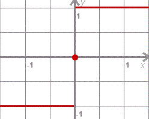- 取整函数
一类将实数映射到相近的整数的函数
常用的取整函数有 下取整函数 (floor(x)) 和 上取整函数 (ceil(x))
- Dirichlet函数
定义在实数范围上, 值域为 \([0, 1]\), 的处处不连续函数
\(D(x) = \begin{cases} 0, \quad x \text{为有理数} \\ 1, \quad x \text{为无理数} \end{cases}\)
{kind=link}
{kind=link}
函数的表示方法¶
表格法
图形法
解析法(公式)
函数的特性¶
- ① 奇偶性
前提: 定义域必须关于原点对称
奇函数关于原点对称
偶函数关于 \(y\) 轴对称
- ② 单调性
当函数 \(f(x)\) 的自变量在其定义区间内增大 (或减小)时, 函数值 \(f(x)\) 也随着增大 (或减小),
则称该函数为在该区间上具有单调性
- ③ 有界性
若存在两个常数 \(m\) 和 \(M\), 使函数 \(y=f(x), x \in D\) 满足 \(m \leqslant f(x) \leqslant M, x \in D\),
则称函数 \(y=f(x)\) 在 \(D\) 有界
其中 \(m\) 是它的 下界, \(M\) 是它的 上界
- ④ 周期性
若存在非零常数 \(T\), 对于定义域内的任意 \(x\), 使 \(f(x)=f(x+T)\) 恒成立,
则 \(f(x)\) 叫做周期函数, \(T\) 叫做这个函数的一个 周期
反函数, 复合函数¶
- 反函数
设函数 \(y = f(x)\) 的定义域是 \(D\), 值域是 \(f(D)\)
如果对于值域 \(f(D)\) 中的每一个 \(y\), 在 \(D\) 中有且只有一个 \(x\) 使得 \(g(y)=x\), (即 \(y=f(x)\) 严格单调)
则按此对应法则得到了一个定义在 \(f(D)\) 上的函数, 并把该函数称为函数 \(y = f(x)\) 的反函数,
记为 \(x = f^{-1}(y), y \in f(D)\)
由该定义可以很快得出函数 \(f\) 的定义域 \(D\) 和值域 \(f(D)\) 恰好就是反函数 \(f^{-1}\) 的值域和定义域,
并且 \(f^{-1}\) 的反函数就是 \(f\) , 也就是说, 函数 \(f\) 和 \(f^{-1}\) 互为反函数, 即:
\(g(x) = f^{-1}(x), x \in D\)
\(g^{-1}(x) = f(x), x \in D\)
反函数与原函数的复合函数等于 \(x\), 即 \(f^{-1}(f(x)) = x, x \in D\)
习惯上用 \(x\) 表示自变量, 用 \(y\) 表示因变量, 于是函数 \(y=f(x)\) 的反函数通常写成 \(y=f^{-1}(x)\)
- 复合函数
设函数 \(y=f(u)\) 的定义域为 \(D_u\), 值域为 \(M_u\),
函数 \(u=g(x)\) 的定义域为 \(D_x\), 值域为 \(M_x\),
如果 \(M_x \cap D_u \neq \emptyset\),
那么对于 \(M_x \cap D_u \neq \emptyset\) 内的任意一个 \(x\) 经过 \(u\), 有唯一确定的 \(y\) 值与之对应,
则变量 \(x\) 与 \(y\) 之间通过变量 \(u\) 形成一种函数关系
这种函数称为 复合函数 (composite function),
记为： \(y=f[g(x)]\), 其中 \(x\) 为自变量, \(u\) 为中间变量, \(y\) 为因变量(即函数)
基本初等函数¶
- 幂函数
\(y=x^{a}\)
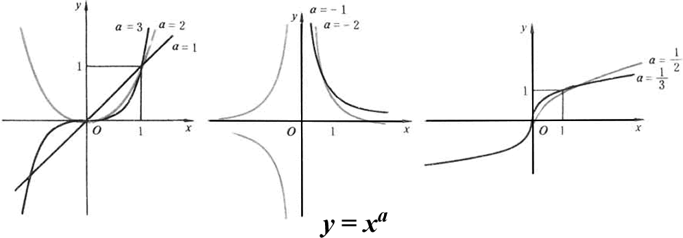- 指数函数
\(y=a^{x} (a>0且a \neq 1)\)
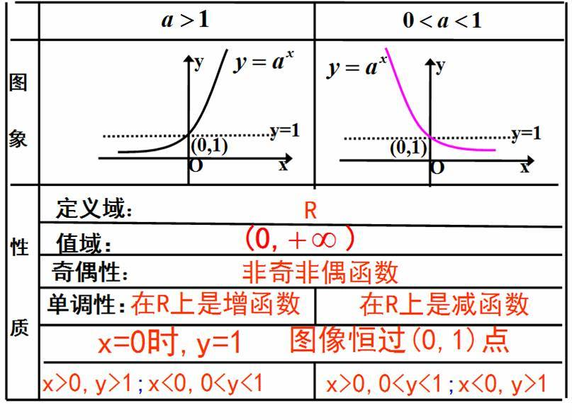- 对数函数
\(y=\log_{a}x (a>0且a \neq 1)\)
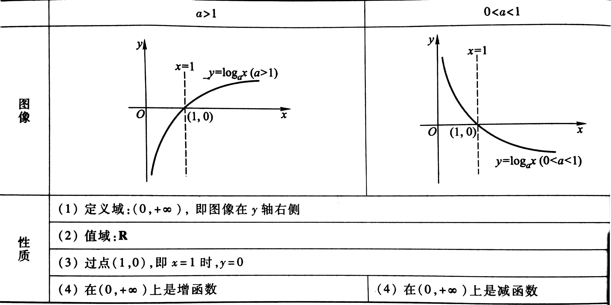- 三角函数
\(y=\sin{x}\) 等
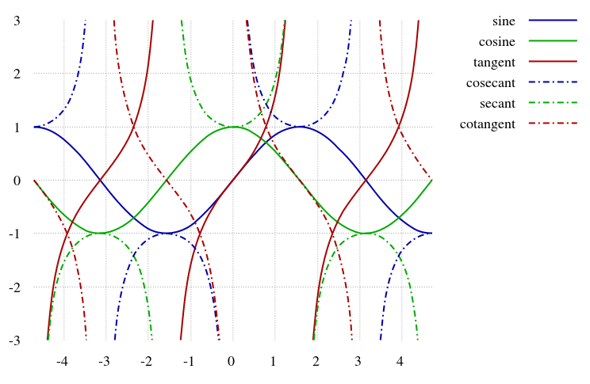- 反三角函数
\(y=\arcsin{x}\) 等
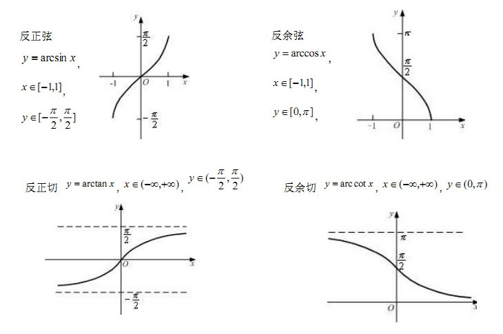
由基本初等函数和常数经过有限次的四则运算和有限次的函数复合步骤所构成并可用一个式子表示的函数称为 初等函数
双曲函数和反双曲函数¶
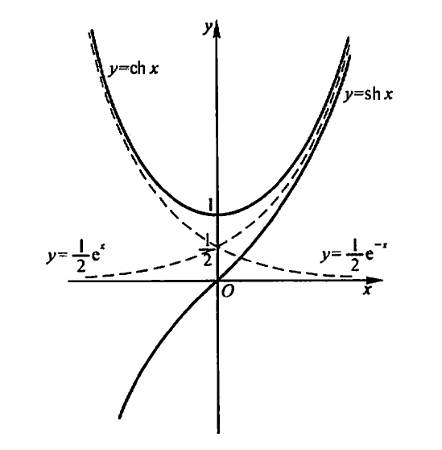{kind=link}
- 双曲正弦
\(\sinh{x} = \frac{e^{x} - e^{-x}}{2}\)
- 双曲余弦
\(\cosh{x} = \frac{e^{x} + e^{-x}}{2}\)
- 双曲正切
\(\tanh{x} = \frac{\sinh{x}}{\cosh{x}} = \frac{e^{x} - e^{-x}}{e^{x} + e^{-x}}\)
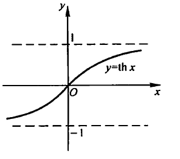公式:
\(\sinh{(x \pm y)} = \sinh{x}\cosh{y} \pm \cosh{x}\sinh{y}\)
\(\cosh{(x \pm y)} = \cosh{x}\cosh{y} \pm \sinh{x}\sinh{y}\)
- 反双曲正弦
\(y = arsh x = \ln{x+\sqrt{x^{2}+1}}\)
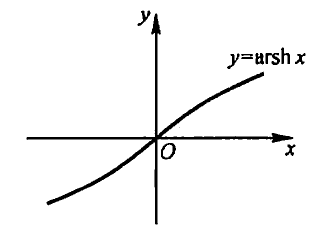- 反双曲余弦
\(y = arsh x = \ln{x+\sqrt{x^{2}-1}}\)
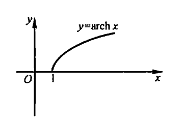- 反双曲正切
\(y = arth x = \frac{1}{2}\ln{\frac{1+x}{1-x}}\)
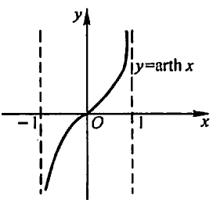
1.2. 数列极限¶
1.2.1. 定义¶
记号:
\(\forall\) 对于任意给定的/对于每一个
\(\exists\) 存在
定义:
设 \(\{x_n\}\) 为一数列, 如果存在常数 \(a\), 对于任意给定的正数 \(\epsilon\), 总存在正整数 \(N\), 使得当 \(n > N\) 时, 不等式 \(|x_n - a| < \epsilon\) 都成立,
那么就称常数 \(a\) 是数列 \(\{x_n\}\) 的 极限, 或者称数列 \(\{x_n\}\) 收敛于 \(a\), 记为
\(\lim_{x \to \infty}x_n = a\), 或 \(x_n \to a (n \to \infty)\)
或者使用记号可以表达为: \(lim_{n \to \infty}x_n = a \Leftrightarrow \forall \epsilon > 0, \exists N \in \mathbb{N}, 当 n > N 时, 有|x_n - a| < \epsilon\)
如果不存在这样的常数, 就说数列 \(\{x_n\}\) 没有极限, 或者说其是 发散 的
{kind=link}
{kind=link}
{kind=link}
1.2.2. 收敛数列的性质¶
唯一性
如果数列收敛, 则其极限唯一
证
設數列 \(x_n\) 有兩個不相等的極限值 \(a, b\),
則對於 \(d=|a-b|>0\), 可以找到正數 \(N\), 使 \(n > N\) 時, 恆有
\(|x_n - a| < \frac{d}{2}\), \(|x_n - b| < \frac{d}{2}\)
從而 \(|a - b| = |(x_n - a) - (x_n - b)| \leqslant |x_n - a| + |x_n - b| < d\)
這與假設 \(d=|a-b|\) 不可能有兩個不相等的極限值
有界性
如果数列收敛, 则其一定有界
保号性
如果数列有极限, 则其任意子数列也有同样的极限
1.3. 函数极限¶
1.3.1. 定义¶
两种情况:
- 自变量 \(x\) 任意地接近于有限值 \(x_0\) (记作 \(x \to x_0\))时, 对应的函数值 \(f(x)\) 的变化
设函数 \(f(x)\) 在点 \(x_0\) 的某一去心邻域内有定义.
如果存在常数 \(A\), 对于任意给定的正数 \(\epsilon\), 总存在正数 \(\delta\), 使得当 \(x\) 满足不等式 \(0 < |x - x_0| < \delta\) 时, 对应的函数值 \(f(x)\) 都满足不等式 \(|f(x) - A| < \epsilon\),
那么常数 \(A\) 就叫做函数 \(f(x)\) 当 \(x \to x_0\) 时的极限, 记作
\(\lim_{x \to x_0}f(x) = A\) 或 \(f(x) \to A (x \to x_0)\)
或 \(\lim_{x \to x_0}f(x) = A \Leftrightarrow \forall \epsilon > 0, \exists \delta > 0, 当0 < |x - x_0| < \delta时, 有|f(x) - A| < \epsilon\)
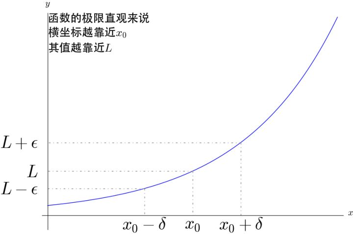- 左极限和右极限
当 \(x \to x_0\) 时 \(f(x)\) 极限存在 \(\Leftrightarrow\) 左极限右极限存在且相等 (即 \(f(x^{-}_{0}) = f(x^{+}_{0})\))
- \(x \to \infty\) 时, \(f(x)\) 的变化
- \[\lim_{x \to \infty}f(x) = A \Leftrightarrow \forall \epsilon > 0, \exists X > 0, 当|x| > X 时, 有|f(x) - A| < \epsilon\]
{kind=link}
1.3.2. 函数极限的性质¶
唯一性
局部有界性
局部保号性
1.4. 无穷小和无穷大¶
1.4.1. 无穷小¶
如果 函数 \(f(x)\) 当 \(x \to x_0\) (或 \(x \to \infty\))时 极限为零,
那么称函数 \(f(x)\) 为当 \(x \to x_0\) (或 \(x \to \infty\))时的无穷小
1.4.2. 无穷大¶
设函数 \(f(x)\) 在 \(x_0\) 的某一去心邻域内有定义.
如果对于任意给定的正数 \(M\), 总存在正数 \(\delta\) (或 \(X>0\)), 只要 \(x\) 适合不等式 \(0 < |x - x_0| < \delta\) (或 \(|x| > X\)) 时, 对应的函数值总满足 \(|f(x)| > M\),
则称函数 \(f(x)\) 为当 \(x \to x_0\) (或 \(x \to \infty\))时的无穷大
如果 \(\lim_{x \to x_0}f(x) = \infty\), 则直线 \(x = x_0\) 是 \(f(x)\) 的 铅直渐近线
1.4.3. 无穷大和无穷小的关系¶
如果 \(f(x)\) 为无穷大, 则 \(\frac{1}{f(x)}\) 为无穷小;
反之, 如果 \(f(x)\) 为无穷小, 且 \(f(x) \neq 0\), 则 \(\frac{1}{f(x)}\) 为无穷大
1.5. 极限运算法则¶
1.5.1. 定理¶
无穷小和函数极限的关系
当 \(x \to x_0\) (或 \(x \to \infty\))时, 函数 \(f(x)\) 具有极限 \(A\) 的充分必要条件是 \(f(x) = A + a\),
其中 \(a \to 0\)
有限个无穷小的和/差也是无穷小
若 \(\alpha \to 0, \beta \to 0 (x \to x_0 \text{或} x \to \infty)\),
则 \(\alpha \pm \beta \to 0\)
无穷小和有界函数的积也是无穷小
若 \(\alpha \to 0, |\beta| \leqslant M\), 则
\(\alpha\beta \to 0\)
无穷小和常数的积也是无穷小
若 \(\alpha \to 0\), \(M\) 是常数,
则 \(M\alpha \to 0\)
有限个无穷小的积也是无穷小
若 \(\alpha \to 0, \beta \to 0 (x \to 0)\),
则 \(\alpha\beta \to 0\)
1.5.2. 四则运算¶
设 \(\lim f(x) = A, \lim g(x) = B\), 则
\(\lim(f(x) \pm g(x)) = A \pm B\)
\(\lim(f(x)g(x)) = AB\)
\(\lim \frac{f(x)}{g(x)} = \frac{A}{B}(B \neq 0)\)
若 \(P(x) = a_0 + a_1x + ... + a_nx^n\),
则 \(\lim_{x \to a}P(x) = P(a)\)
若 \(P(x) = a_nx^n + ... + a_1x + a_0, Q(x) = b_mx^m + ... + b_1x + b_0 (b_m \neq 0)\),
则 \(\lim_{x \to \infty}\frac{P(x)}{Q(x)} = \begin{cases} \frac{a_n}{b_m}, & m = n \\ 0, & m > n \\ \infty, & m < n \end{cases}\)
1.5.3. 复合函数¶
若 \(y = f(u), u = g(x) (g(x) \neq a)\), 其复合函数为 \(f(g(x))\), 且 \(\lim_{x \to x_0}g(x) = a, \lim_{u \to a}f(u) = A\),
则 \(\lim_{x \to x_0}f(g(x)) = A\)
1.6. 极限存在准则¶
1.6.1. 夹逼定理¶
若数列 \(a_n \leqslant b_n \leqslant c_n\),
且 \(\lim_{n \to \infty}a_n = \lim_{n \to \infty}c_n = A\),
则 \(\lim_{n \to \infty}b_n = A\)
若函数 \(f(x) \leq g(x) \leq h(x)\),
且 \(\lim_{}f(x) = \lim_{}h(x) = A\),
则 \(\lim_{}g(x) = A\)
重要极限1:
1.6.2. 单调有界的数列必有极限¶
重要极限2:
对数列 \(a_n = (1 + \frac{1}{n})^n\),
当 \(n \to \infty\) 时, \(\lim_{n \to \infty}(1 + \frac{1}{n})^n = e\)
对函数 \(f(x) = (1 + \frac{1}{x})^x\),
当 \(x \to \infty\) 时, \(\lim_{x \to \infty}(1 + \frac{1}{x})^x = e\)
对函数 \(f(x) = (1 + x)^{\frac{1}{x}}\),
当 \(x \to 0\) 时, \(\lim_{x \to 0}(1 + x)^{\frac{1}{x}} = e\)
1.7. 无穷小的比较¶
无穷小的商, 反映了不同无穷小 趋于零的快慢程度
若 \(\lim \frac{\beta}{\alpha} = 0\), 就说 \(\beta\) 是 \(\alpha\) 的 高阶无穷小,
记作 \(\beta = \omicron(\alpha)\)
若 \(\lim \frac{\beta}{\alpha} = \infty\), 就说 \(\beta\) 是 \(\alpha\) 的 低阶无穷小
若 \(\lim \frac{\beta}{\alpha^k} = c \neq 0, k > 0\), 就说 \(\beta\) 是 \(\alpha\) 的 k阶无穷小
若 \(\lim \frac{\beta}{\alpha} = c \neq 0\), 就说 \(\beta\) 是 \(\alpha\) 的 同阶无穷小,
记作 \(\beta = O(\alpha)\)
若 \(\lim \frac{\beta}{\alpha} = 1\), 就说 \(\beta\) 是 \(\alpha\) 的 等价无穷小,
记作 \(\alpha \sim \beta\)
1.7.1. 等价无穷小的性质¶
\(\alpha \sim \alpha\)
\(\alpha \sim \beta \Rightarrow \beta \sim \alpha\)
\(\alpha \sim \beta, \beta \sim \gamma \Rightarrow \alpha \sim \gamma\)
若 \(\alpha \sim \alpha_1, \beta \sim \beta_1\), 且 \(\lim \frac{\beta_1}{\alpha_1}=A\),
则 \(\lim \frac{\beta}{\alpha}=A\)
\(\alpha \sim \beta \Leftrightarrow \beta = \alpha + \omicron(\alpha)\)
1.7.2. \(x \to 0\) 时的常见无穷小¶
\(x \sim \sin{x} \sim \tan{x} \sim \arcsin{x} \sim \arctan{x} \sim e^x-1 \sim \ln{(1+x)}\)
\(1 - \cos{x} \sim \frac{1}{2}x^2\)
\((1+x)^a - 1 \sim ax\)
Note
当有 \(u(x)^{v(x)}\) 时, 转换成 \(e^{v(x)\ln{u(x)}}\)
当有 \(e^n\) 时, 转换成 \(e^{\Delta}-1 \sim \Delta (\Delta \to 0)\)
当有 \(\ln\) 时, 转换成 \(\ln{(1+\Delta)} \sim \Delta (\Delta \to 0)\)
1.8. 函数的连续性与间断点¶
1.8.1. 函数的连续性¶
若 \(\lim_{x \to x_0}f(x) = f(x_0)\),
则 \(f(x)\) 在 \(x=x_0\) 处 连续
\(f(x^{-}_0) = f(x^{+}_0) = f(x_0)\)
区间上的连续函数:
区间上的每一点都连续
当区间为闭区间 \([a,b]\) 时,
\(f(a) = f(a+0)\) (左连续), \(f(b) = f(b-0)\) (右连续))
1.8.2. 函数的间断点¶
若 \(\lim_{x \to x_0}f(x) \neq f(x_0)\), 则点 \(x_0\) 称为函数 \(f(x)\) 的间断点
- 第一类间断点
当 \(f(a-0), f(a+0)\) 存在
可去间断点 \(f(a-0) = f(a+0)\)
跳跃间断点 \(f(a-0) \neq f(a+0)\)
- 第二类间断点
\(f(a-0), f(a+0)\) 至少有一个不存在
1.9. 连续函数的运算与初等函数的连续性¶
基本初等函数 (幂函数, 指数函数, 对数函数, 三角函数, 反三角函数) (不可拆解)
基本初等函数在其定义域内都是连续的
初等函数 (由常数和基本初等函数经过四则运算/复合而成)
初等函数在其定义区间内都是连续的
若 \(f(x), g(x)\) 在点 \(x_0\) 连续,
则其四则运算的结果也在 \(x_0\) 连续
若 \(\lim_{u \to a}f(u) = f(a)\), 即 \(f(u)\) 在点 \(a\) 连续, \(\lim_{x \to x_0}g(x) = a\),
则 \(\lim_{x \to x_0}f(g(x)) = f(a)\), 即 \(f(g(x))\) 在点 \(x_0\) 连续
\(\lim_{x \to x_0}f(g(x)) = f(\lim_{x \to x_0}g(x))\)
1.10. 闭区间上连续函数的性质¶
\(f(x) \in C[a,b]\), 则 \(f(x)\) 在 \([a,b]\) 上能取到 \(m\) 和 \(M\) (最值定理)
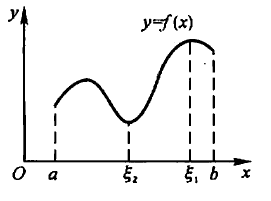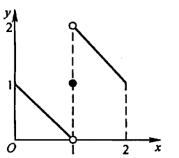但在开区间上连续或在闭区间内有间断点时不一定有最大值最小值¶
\(f(x) \in C[a,b]\), 则 \(\exists k > 0\), \(\forall x \in [a,b]\), 有 \(|f(x)| \leq k\) (有界定理)
\(f(x) \in C[a,b]\), 且 \(f(a)f(b) < 0\), 则 \(\exists x_0 \in (a,b)\), 使 \(f(x_0) = 0\) (零点定理)
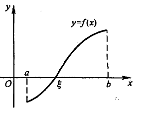\(f(x) \in C[a,b]\), 对于 \(\forall \eta \in [m, M]\), 都 \(\exists x_0 \in [a,b]\), 使得 \(f(x_0) = \eta\) (介值定理)(\(m\) 和 \(M\) 之间的值都可取到)
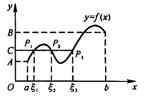